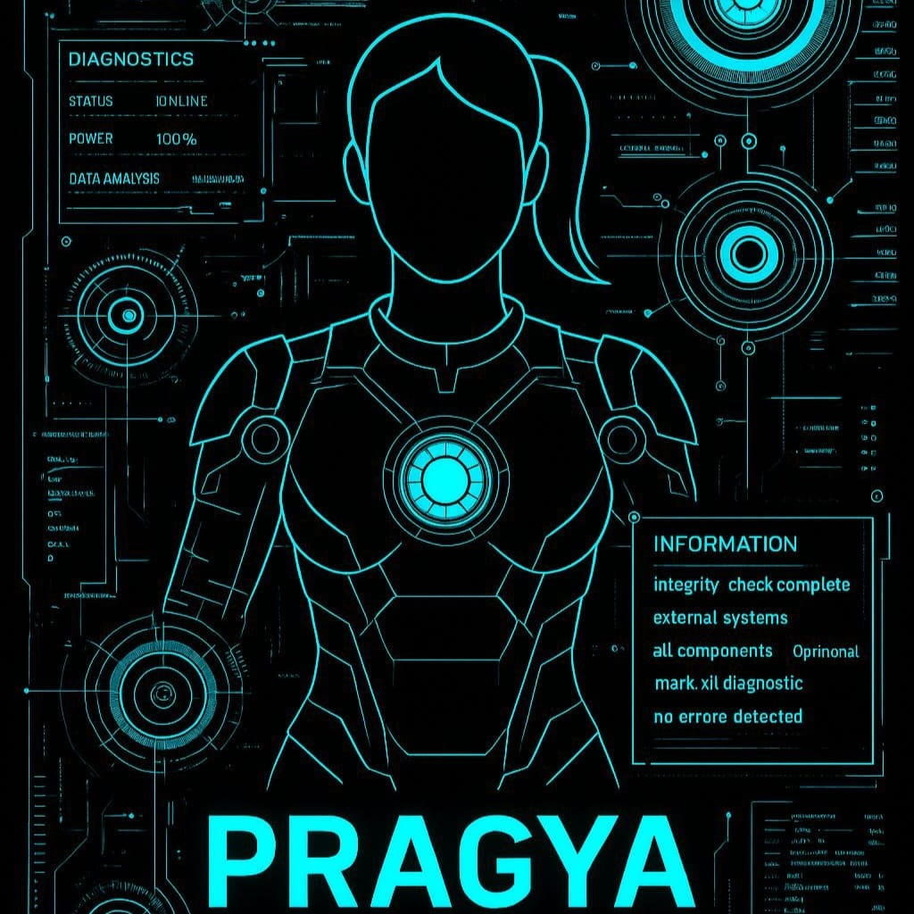
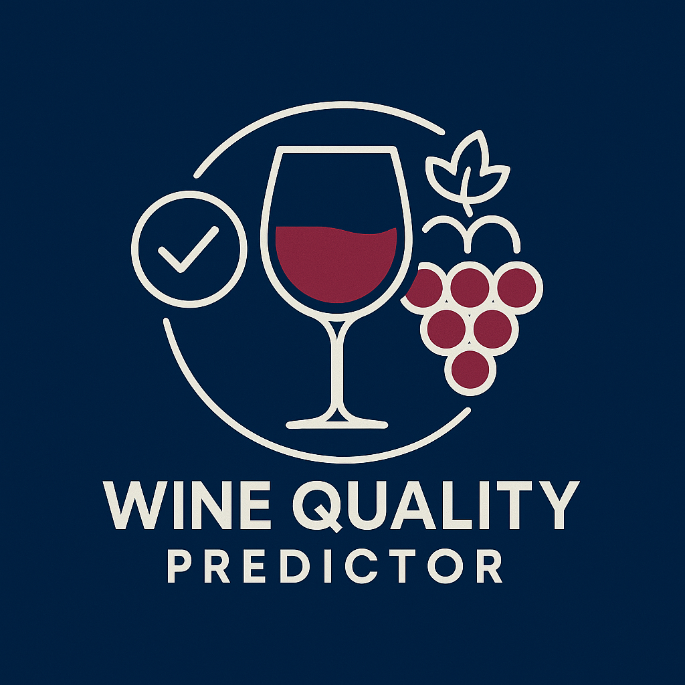
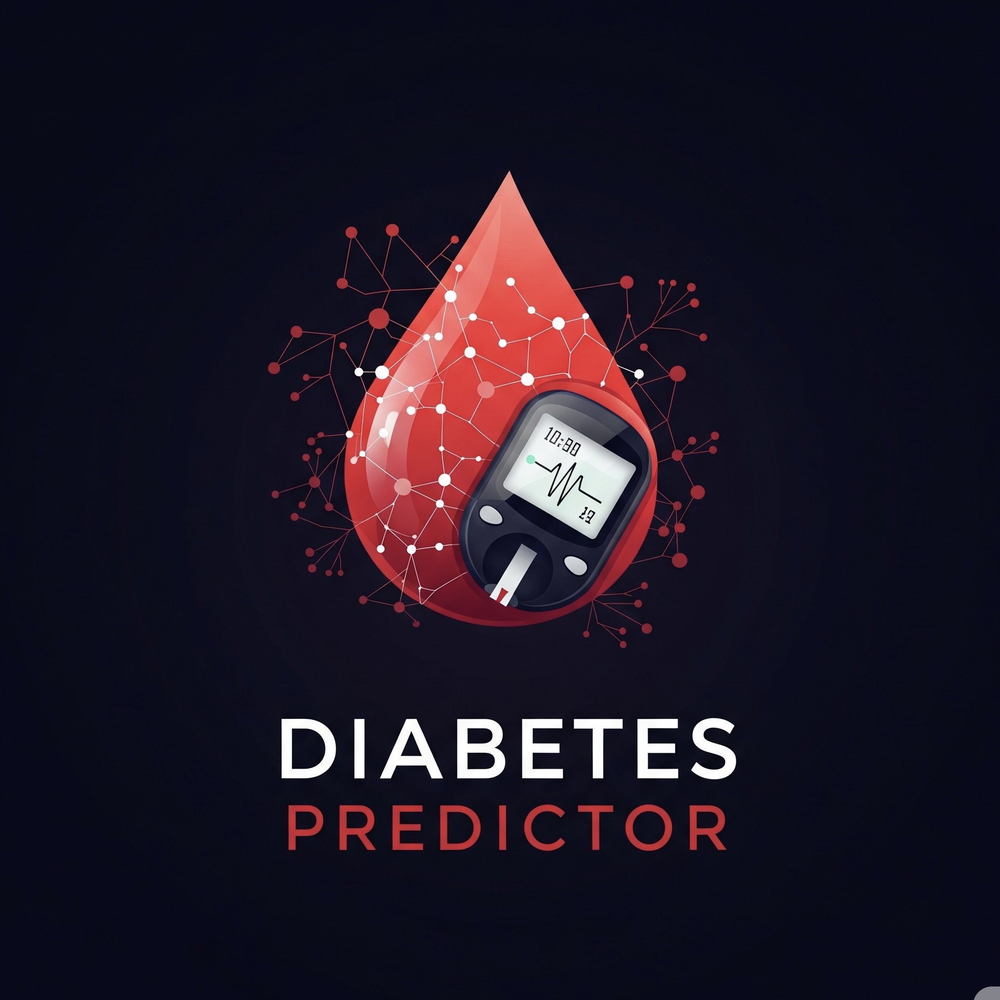
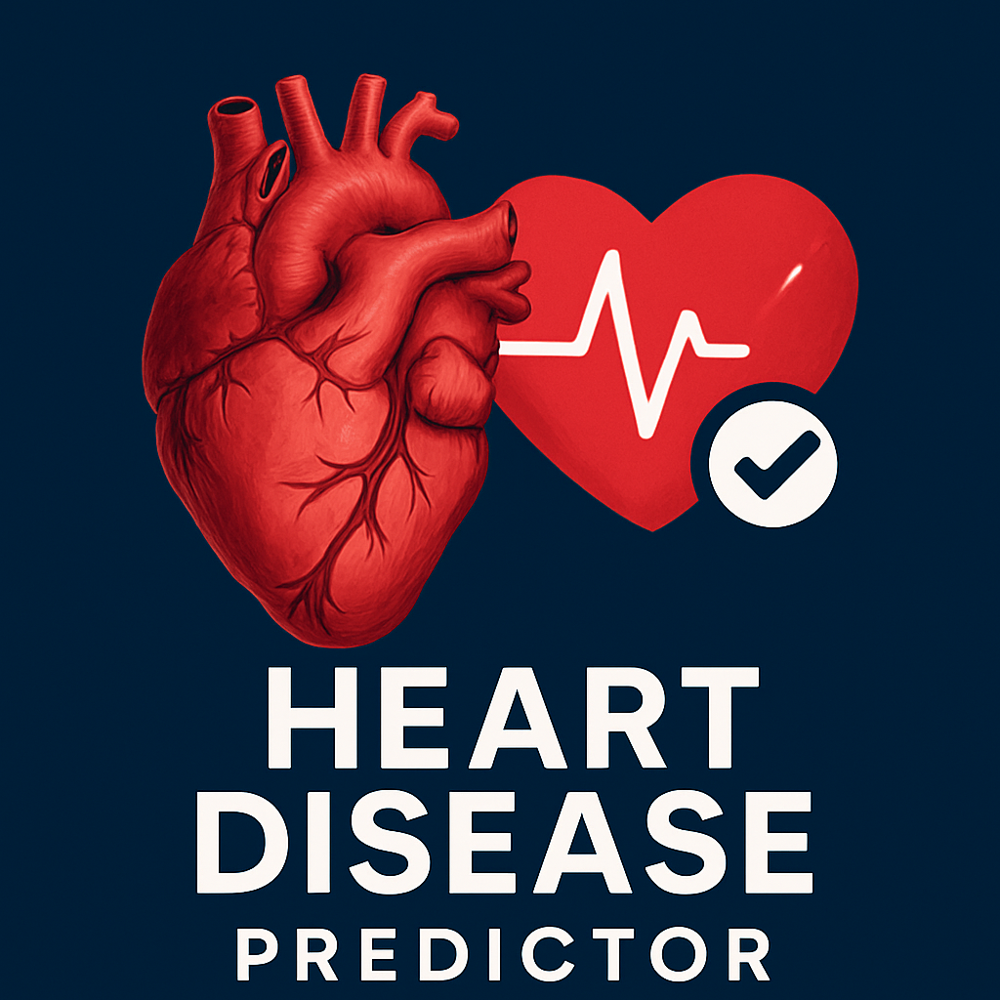
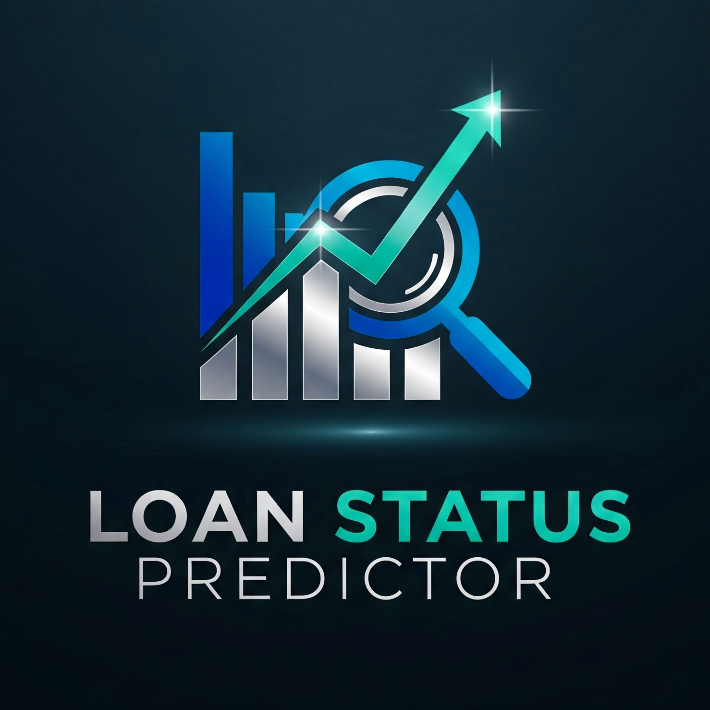
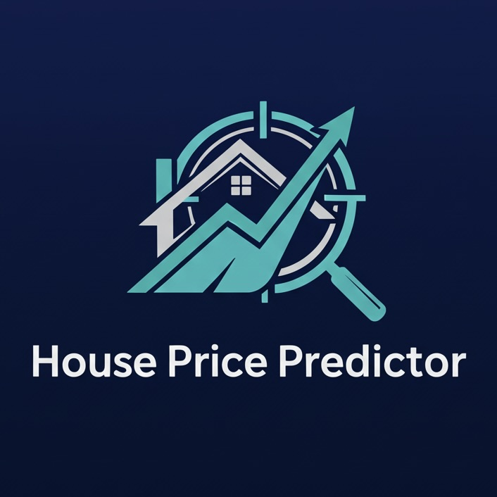
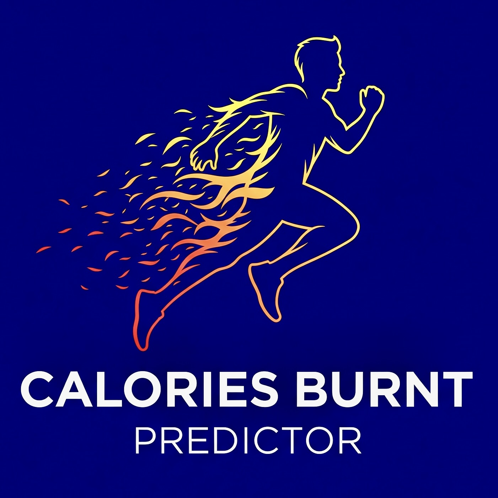
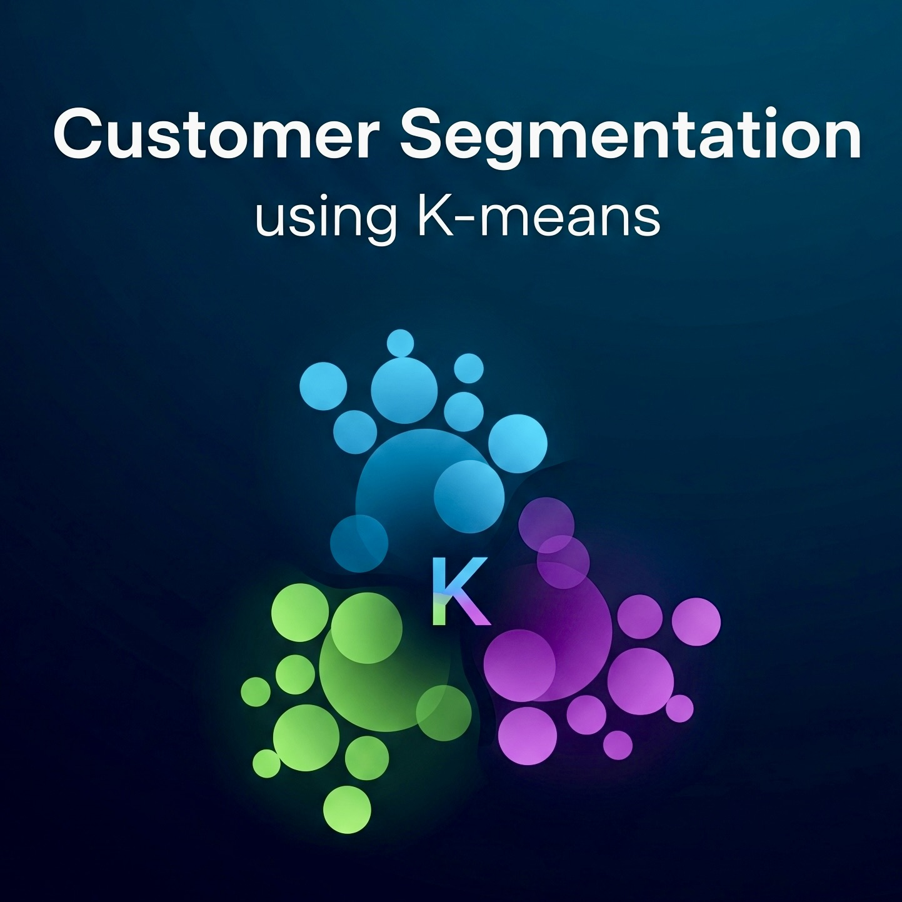
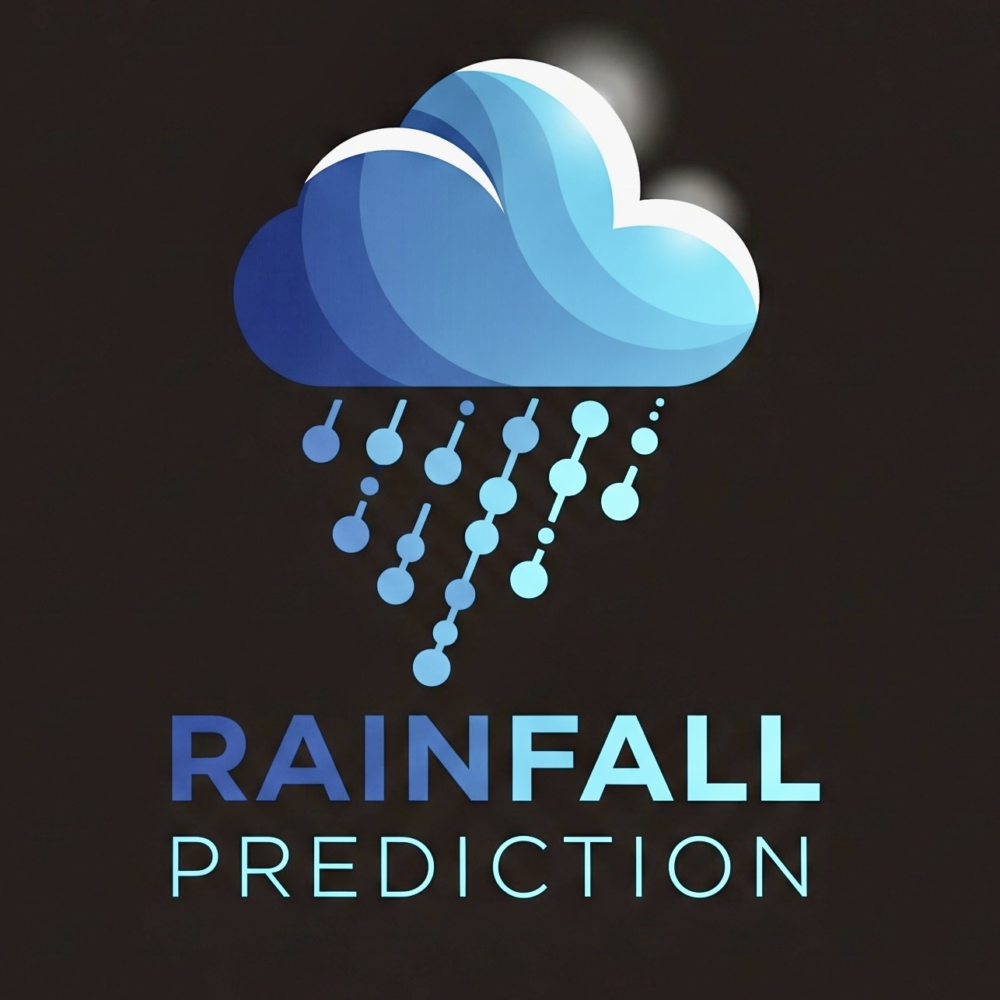
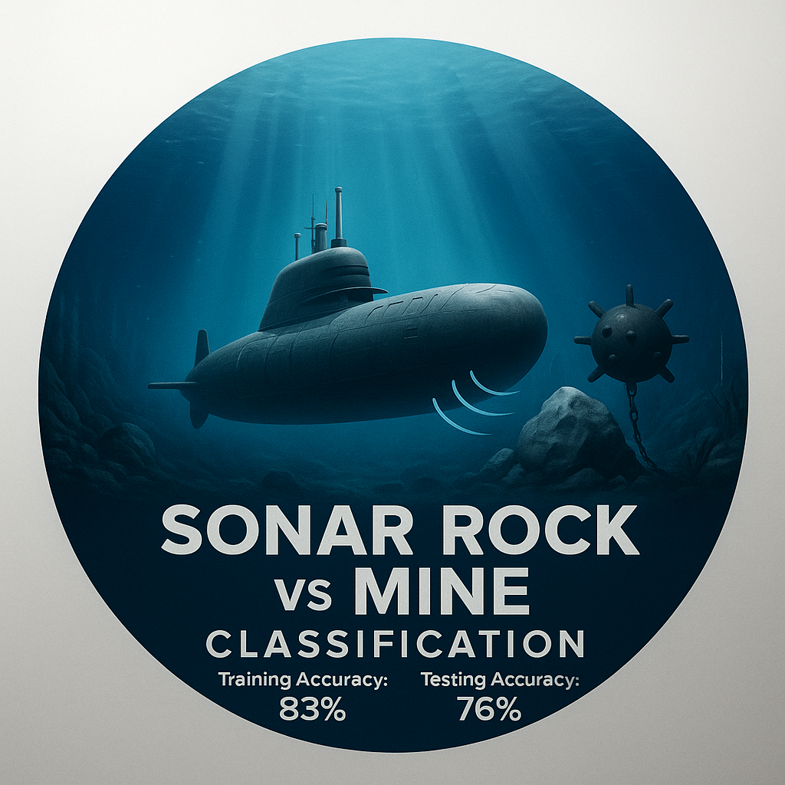

Hello, I'm Soumyadeep De
Aspiring Data Science Professional and ml developer
Aspiring Data Science Professional and ml developer
Hello everyone,
I am Soumyadeep De, an aspiring AI and Data Science professional with a strong foundation in Computer Science, passionate about developing innovative and inclusive technological solutions.
Currently pursuing a dual-degree program—B.Tech in Computer Science and Engineering from Jalpaiguri Government Engineering College (SGPA: 9.31), and B.S in Applied AI and Data Science from the Indian Institute of Technology, Jodhpur (SGPA: 8.75).
I am passionate about leveraging AI and data science to create impactful, inclusive, and sustainable solutions. Open to collaborations and opportunities in research, development, and innovation-driven roles. I’m all about solving real problems and constantly upskilling to reach my goals of building secure systems and contributing to open source.

This is your all-in-one voice assistant . Here’s what Pragya does: Listens for the wake word “Pragya”. Replies to known Q&A from a local JSON knowledge base. Can open popular websites on command. Recognizes spoken commands like time/date or music. Launches a Rock Paper Scissors game using webcam + hand gestures (via MediaPipe). Provides spoken feedback via text-to-speech.
GitHub RepoThis project builds a content-based movie recommendation engine using TF-IDF Vectorization and Cosine Similarity. Given a user's favorite movie, the system suggests a list of movies with similar genres, keywords, cast and director.
GitHub RepoThis project predicts the selling price of used cars based on various features using regression models. The dataset contains specifications of cars such as year, price, fuel type, seller type etc.
GitHub RepoThis project aims to predict the price of gold (GLD index) based on financial indicators using a machine learning model.
GitHub Repo
This project focuses on building a machine learning model to predict the quality of red wine based on various physicochemical features. Using the Random Forest Classifier, we aim to classify wines into good or bad categories based on their attributes.
GitHub Repo
This project implements a binary classification model to predict whether a person is diabetic or not using the PIMA Indian Diabetes Dataset.
GitHub Repo
This project builds a logistic regression model to predict the presence of heart disease based on medical attributes. It uses clinical data to assess whether a patient is likely to suffer from heart disease.
GitHub Repo
This project uses a supervised machine learning model(SVM) to predict whether a loan application will be approved or not, based on applicant details and financial information.
GitHub RepoThis project focuses on detecting fraudulent credit card transactions using a logistic regression model. The system classifies transactions as either normal or fraudulent based on anonymized and scaled transaction features.
GitHub RepoThis is a machine learning project that detects spam emails based on their content using Logistic Regression and TF-IDF vectorization. The model achieves high accuracy in classifying messages as either spam or ham (not spam).
GitHub RepoThis project develops a predictive model using linear regression to estimate individual medical insurance costs based on various personal and health-related attributes.
GitHub Repo
This project demonstrates a machine learning approach to predict house prices using the California Housing dataset and the XGBoost Regressor model.
GitHub RepoThis project develops a predictive model using linear regression to estimate individual medical insurance costs based on various personal and health-related attributes.
GitHub Repo
This machine learning project predicts the number of calories burnt during physical activity based on user metrics like age, weight, heart rate, duration and more, using the XGBoost Regressor.
GitHub Repo
This project applies unsupervised machine learning to identify distinct customer groups based on their Annual Income and Spending Score, helping businesses better understand customer behavior and tailor strategies accordingly.
GitHub RepoA machine learning classification project that predicts passenger survival on the Titanic using logistic regression. The dataset includes demographic and passenger-specific information such as age, gender, ticket class and more.
GitHub Repo
This project predicts the likelihood of rainfall based on meteorological features using various state of the art classification models. It includes data preprocessing, visualization, handling of class imbalance and evaluation using ROC-AUC and classification metrics.
GitHub Repo
Sonar signals are used to detect and classify objects underwater. This classification task helps in identifying whether the detected object is a rock (R) or a mine (M) based on the sonar data. The dataset used contains 208 samples with 60 features each, representing frequency-based energy measurements.
GitHub RepoYou can view or download my resume below:
Email:
b24bs1362@iitj.ac.in
Phone:
+91 8101416667